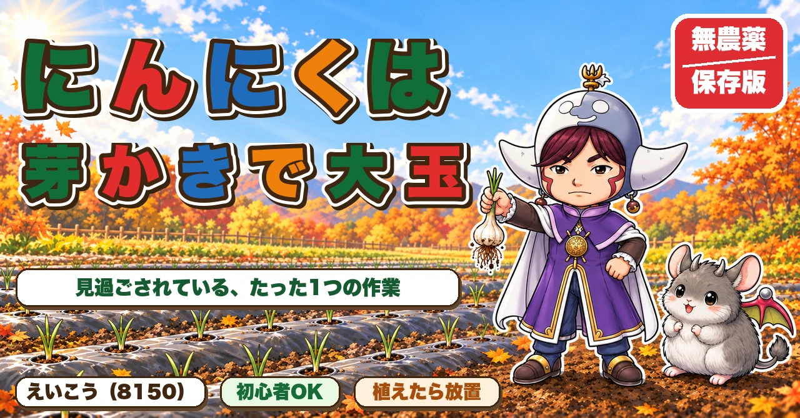
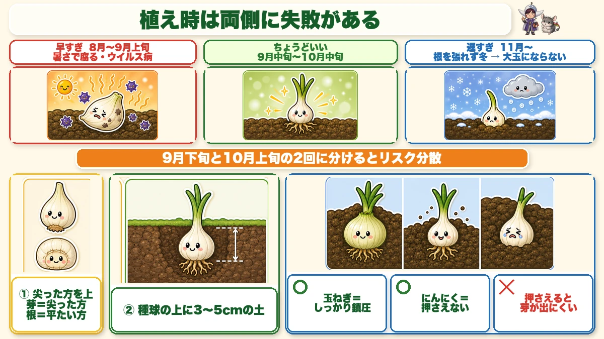
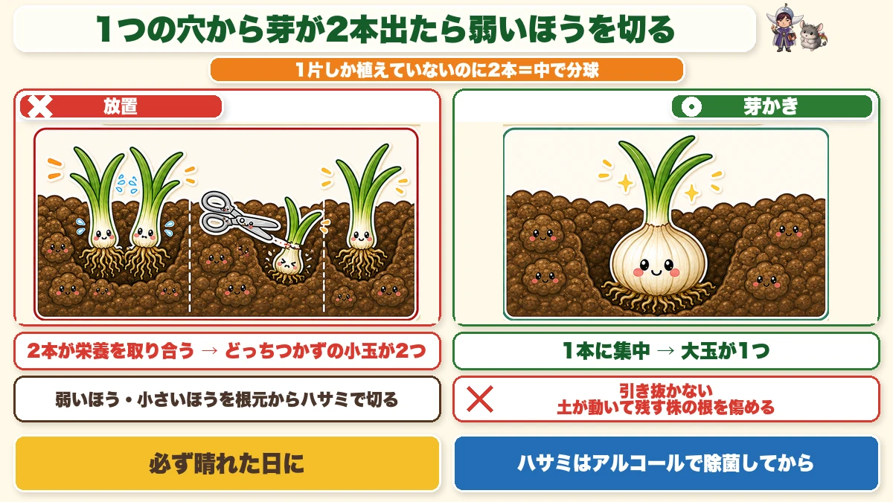
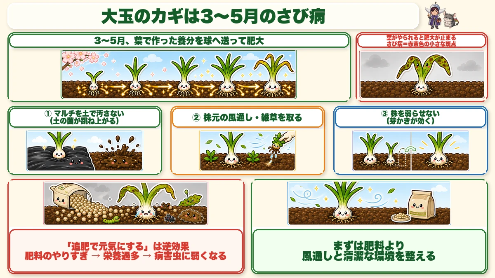
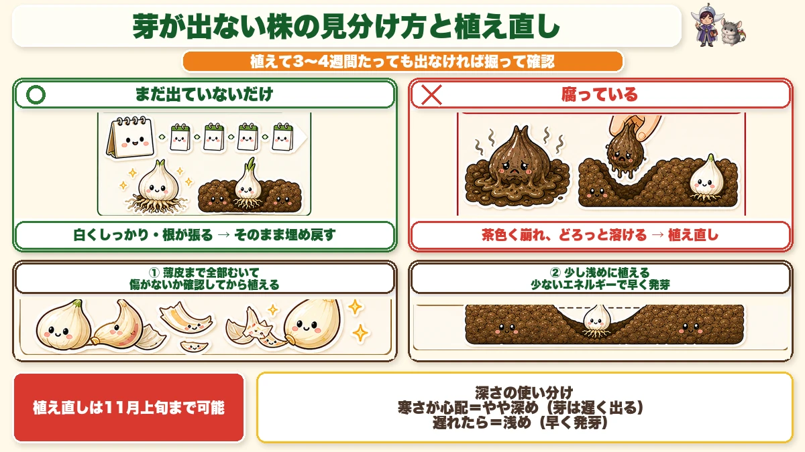
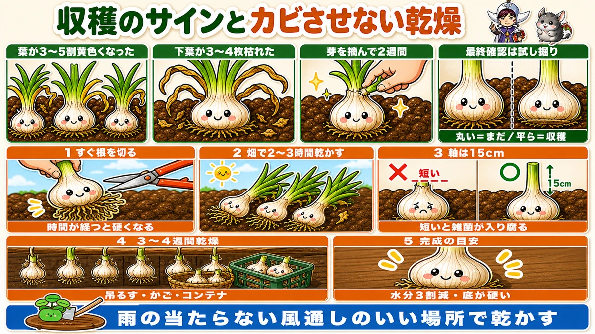

にんにくの育て方｜種球の選び方、植える時期と深さ、芽かき、追肥、さび病、収穫と乾燥

📖 この記事の目次
この記事で分かること
- にんにくは、秋に種球（たねきゅう）をばらして植え、冬を越させて、翌年の5月ごろから6月ごろに収穫する野菜です。
- 植える時期の目安は、一般的な地域で9月中旬から10月中旬です。早すぎても遅すぎても、うまく育ちにくくなります。
- 種球は、大きく、傷やしみのないものを選びます。ばらした片（鱗片）も、一つずつ傷んでいないか確かめます。
- 1か所から芽が2本、3本と出てきたら、小さいほうをはさみで根元から切ります（芽かき）。引き抜かないのがポイントです。
- 春に花茎（にんにくの芽）が伸びてきたら、摘み取ります。摘み取ると玉が大きくなる、という説明と、ほとんど変わらない、という説明があります。
- 葉の3〜5割が黄色くなってきたら、収穫の目安です。収穫したら、畑で少し乾かしてから、風通しのよい日陰でしっかり乾かします。
にんにくは、一度植えたら、あとは比較的手がかからず、家庭菜園でも育てやすい野菜です。料理に欠かせない香味野菜なので、自分で育てたにんにくがあると、毎日の料理がちょっと楽しくなります。秋に植えてから収穫まで半年以上かかる、気の長い野菜ですが、そのぶん、自分で育てたにんにくを掘り上げたときの喜びは格別です。
ただ、「玉が小さかった」「芽が出なかった」「乾かしている途中でカビた」などの失敗もよく聞きます。この記事では、にんにくの育て方を、種球選びから植えつけ、冬から春の手入れ、病気、収穫と乾燥まで、順番に書いていきます。説明が分かれているところは、両方の考え方を並べておきますね。

早見：にんにくの基本（ひと目で分かる目安）
時期の目安（一般的な地域）
- 植えつけ：9月中旬〜10月中旬（地域や品種で変わる）
- 芽かき：芽が出そろって、1か所から2本以上出ていたら
- 追肥：冬（11月〜2月ごろ）に1〜3回。説明によって違う
- 花茎の摘み取り：春、花茎が伸びてきたら
- 収穫：5月中旬〜6月ごろ
植え方の目安
- 種球をばらして、1片ずつ植える
- とがったほうを上に向ける
- 片の上に土が2〜5cmかぶるくらいの深さ（説明によって違う）
- 株と株のあいだは15cmくらいの例
収穫と乾燥の目安
- 葉の3〜5割が黄色くなったら、試し掘り
- 畑で数時間乾かしてから持ち帰る
- 風通しのよい日陰で、1か月ほど乾かす
種球の選び方
大きく、傷のないものを
種球（植えるためのにんにく）を選ぶときは、玉全体が大きく、首がしまっていて、しわやしみ、傷がないものを選ぶ、と説明されます。種球の底を押してみて、やわらかいものは避ける、という確認方法もあります。
ばらした片も、一つずつ確かめる
種球は、ばらして1片ずつ植えます。ばらしたときに、片の一つひとつに傷みがないかを確かめましょう。玉全体が大きくても、中の片に傷があれば、そのまま植えないほうが安心です。
大きな片を植える
にんにくは、大きな片を植えるほど、大きな玉に育ちやすい、と説明されます。小さな片は、大きく育ちにくく、病気にもなりやすい、という説明もあります。小さな片は、1か所に2〜3粒ずつ植えて、葉を食べる「葉にんにく」として育てる方法もあります。
安い種球の選び方
値段が高い種球には、それなりに大きな片が入っていることが多い、と説明されます。一方で、安くて小ぶりなものが悪いというわけではなく、しっかりよいものだけを選別して植えればよい、という説明です。玉をばらして、大きくて傷のない片だけを植え、小さな片は葉にんにく用などに回しましょう。
お尻を押して、ぶよぶよを確かめる
片のお尻（根が出る平らな部分）を親指で押してみて、ぶよぶよしていないか確かめる、という方法も紹介されています。外から見てきれいなお尻でも、皮をむいて植える段階になると、ぶよぶよと腐っていることがある、と説明されます。植える直前にも、もう一度確かめておくと安心です。
自分のにんにくを種球にする
収穫したにんにくは、保存しておけば、翌年の種球として使うことができる、と説明されます。毎年種球を買うのはお金がかかりますが、よく育った大きな玉を残しておけば、次の年の種球になります。
薄皮をむくか、むかないか
植える前に片の薄皮をむくと、傷が見つけやすくなるという利点があります。一方で、むくときに片を傷つける可能性もあり、家庭菜園では必ずしも必要ない、という説明もあります（あとで書きます）。
土づくり
ふかふかで、水はけのよい土に
にんにくは、ふかふかの土で、日当たりと水はけのよい場所を好みます。長雨で水たまりになるような場所は避けましょう。
酸度の目安
にんにくに合う土の酸度は、pH5.5〜6.5くらい、と説明されます。土が極端に酸性に傾いている場合には、石灰をまいて酸度を調整します。苦土石灰なら植えつけの2週間以上前、有機石灰なら直前でもよい、という説明があります。石灰は、測ってから必要なときだけ入れましょう。
畑を長く使う野菜
にんにくは、9月や10月に植えてから、6月ごろに収穫するまで、8〜9か月もの長いあいだ畑を使う野菜です。そのあいだ、その畝はほかの野菜に使えなくなるのが弱点です。畝の端や、ほかの野菜とのあいだをうまく使って植える工夫を紹介する人もいます。植える場所は、春から夏の野菜の計画も考えて決めましょう。
植える場所を選ぶ
にんにくは、長いあいだ同じ場所を使うので、植える場所選びも大切です。日当たりがよく、水はけのよい場所を選びましょう。冬に日陰になる場所や、雨のあとに水がたまる場所は避けます。春に夏野菜を植える場所とぶつからないように、畑の計画を立てておくと安心です。
マルチを使う例
穴のあいたマルチを使って、株間・条間15cmで植える例があります。マルチは、保温や乾燥防止、雑草よけ、泥はね防止に役立ちますが、マルチを使わなくても育てられます。
植える時期
9月中旬から10月中旬が目安
一般的な地域では、9月中旬から10月中旬に植える、と説明されます。ただし、地域や品種によっても変わります。
早すぎても、遅すぎても失敗する
早く植えすぎると、まだ暑さが残っていて、種球が腐ったり、病気になったりすることがある、と説明されます。逆に、遅く植えると、冬になる前に根を十分に張れず、冬を越しても大きく育たない、という説明です。にんにくの植えどきは、両側に失敗がある、というわけですね。
気温と地温の目安
植えるタイミングの目安として、最高気温が25度以下、地温が20度前後になったころ、という説明があります。天気予報の最高気温を見ながら、暑さが落ち着いたころに植えましょう。
2回に分けて植える方法も
9月下旬と10月上旬の2回に分けて植える、という方法を紹介する人もいます。その年の暑さがどうなるか分からないので、時期をずらしておくと、どちらかがうまく育つ、という考え方です。
暖かい地域では、遅く植える例も
暖かい地域では、12月から1月に植えて、翌年に収穫している例もあります。ただし、ふつうの時期に植えたものより、小さめになりやすいです。遅植えは、暖かい地域での話として考えてください。
植える前のひと手間
薄皮をむいて「つるつる」にする
片の薄皮をむいて、つるつるの状態にしてから植えると、芽が早く出るのは間違いない、という説明があります。ただし、この方法をすすめるのは、植えるのが遅くなってしまった人や、雨が続いてなかなか植えられなかった人だ、という説明です。芽が早く出ることと、最後に大きな玉になることは、別の話として考えておきましょう。
植える前に冷やす
植える前に、種球を冷蔵庫で冷やしておく、という方法も紹介されています。20日から1か月ほど冷やす、という説明と、1日だけ冷やす、という説明があり、日数がかなり違います。家庭菜園では必須ではなく、植える時期によっては品質が落ちる恐れもある、という説明もあります。初めてなら、無理にやらなくても大丈夫です。
植え方
手順1：種球をばらす
種球を、1片ずつにばらします。片の底（根が出る部分）を傷つけないように、ていねいにばらしましょう。根が出る部分が傷つくと、根がうまく出てこないことがあるからです。ばらしたら、片を一つずつ見て、傷みやぶよぶよがないかを確かめながら、植える片を選んでいきます。
手順2：とがったほうを上に
片のとがったほうが上（芽が出るほう）、平らなほうが下（根が出るほう）です。とがったほうを上にして植えます。
手順3：深さに気をつける
植える深さは、説明によって違います。
- 片の上に土が3〜5cmかぶるくらい
- 片の上に土が2cmくらい
- 片の上に5cm、片の大きさが3cmなら、穴の深さは8cmくらい
- 暖かい地域の遅植えでは、頭が少し隠れるくらい
ここで気をつけたいのは、「穴の深さ」と「片の上にかぶる土の厚さ」が違うことです。片の上に何cm土がかぶるか、で考えると分かりやすいと思います。
手順4：株間をとる
株と株のあいだは、15cmくらいとる例があります。畝の幅が広ければ、何列かに分けて植えます。
手順5：土をかぶせる
片を植えたら、土をかぶせます。上から押さえない、という説明と、まわりから土を寄せて押さえる（圧着する）、という説明があります（あとで書きます）。
手順6：植えたあとの水
植えたあと、雨がなく土が乾いているようなら、水をやります。

芽かき
1か所から2本、3本出てきたら
にんにくを植えると、1片しか植えていないのに、1か所から芽が2本、3本と出てくることがあります。そのままにしておくと、栄養の取り合いになって、どっちつかずの小さな玉になってしまう、と説明されます。
小さいほうを、根元からはさみで切る
芽が2本以上出ていたら、大きいほうを残して、小さいほうを根元からはさみで切ります（芽かき）。決して引き抜かないでください、と説明されます。引き抜くと、残したい芽まで傷めてしまうことがあるからです。
芽かきは、晴れた日に
芽かきは、晴れた日に行い、はさみはアルコールなどで消毒してから使う、という説明があります。切り口が早く乾いて、病気が入りにくくなるからです。
いつやるか
芽かきの時期は、月で決めるより、株の様子を見て決めます。11月に追肥をしたときに2本の芽を見つけて切った例や、3月下旬から4月に、株が分かれているのを確かめた例もあります。芽が出そろったら、ときどき株元を見て、2本以上出ていないか確かめましょう。
追肥と水やり
追肥の回数と時期
にんにくの追肥は、説明によってかなり違います。
- 11月中に1回目、2月ごろに2回目
- 有機の肥料で、12月と2月の2回
- 有機の肥料で、冬に1回だけ（12月から1月初め）
- 年内と年明けに、2〜3回
- 11月はまだ早いので、成長しないからといって肥料を足さない
元肥の量や、使う肥料、株の育ち具合で変わります。冬の追肥は、遅れないように1月中に終えておく、という説明もあります。有機の肥料は効きはじめるまでに時間がかかるので、春に効かせたいなら、冬のうちに済ませておくのがよい、という考え方です。「何回」と決めつけず、葉の色や株の大きさを見て調整しましょう。
追肥のやり方
株と株のあいだに穴をあけて、鶏ふんなどの肥料を少しだけ入れ、土をかぶせる、という方法があります。1株あたり10ccくらいを、株の真ん中あたりに入れる例もあります。
株が小さいときは
育ちが遅れて株が小さいときは、追肥を少し早めにしたり、不織布のトンネルをかけて保温したりする方法があります。一方、ある程度大きく育った株は、トンネルを外して寒さに当てる、という考え方もあります。
秋の水のやりすぎに注意
11月ごろに水をたくさんやると、病気の原因になる、と説明されます。にんにくの生育に水分が必要ないわけではありませんが、必要以上に水を与えると、根が根腐れを起こし、そこから病気のもとが入りこむことがある、という説明です。秋から冬は、基本的に水やりを控えめにします。
春は、乾きすぎたら水を
一方、春になって、土が極端に乾いている場合は、土から水分や養分を吸えずに育たなくなるかもしれないので、水を与えましょう、という説明があります。雨がまったく降らないときなどです。水をやるときは午前中に。夕方に与えると、冷えこんで凍る原因になる、と説明されます。
5月初めに葉が10枚あれば
玉が本格的に大きくなりだす5月初めごろまでに、葉が10枚出ていれば、まず間違いなく大きく育ったおいしいにんにくが収穫できるはず、という説明があります。冬から春にかけて、葉をしっかり育てることが大切なんですね。
春は雑草も抜く
春になって暖かくなると、雑草もたくさん生えてきます。にんにくの株のまわりの雑草を抜いておくことも、大切な手入れです。
花茎（にんにくの芽）の摘み取り
春に伸びてくる花茎
春になって暖かくなると、にんにくの株の中心から、花茎（かけい）が伸びてきます。スーパーで「にんにくの芽」として売られているのが、これです。そのままにしておくと、先に花が咲きます。
摘み取ると、栄養が玉に回る
花茎が伸びて花が咲くと、栄養がそちらに取られるので、花茎は摘んでしまいましょう、と説明されます。摘み取った花茎は、炒め物などにして食べられます。
摘んでも、玉の大きさは変わらないという説明も
一方で、花茎を取っても取らなくても、玉の大きさにはほとんど影響がない、という経験を話す人もいます（あとで書きます）。
芽かきと花茎の摘み取りは別の作業
冬に1か所から出た弱い芽を切る「芽かき」と、春に株の中心から伸びる花茎を摘む作業は、まったく別の作業です。混同しないようにしましょう。

病気
春のさび病に注意
春、3月から5月ごろにかけて、葉にオレンジ色の斑点がたくさんできる「さび病」が出ることがあります。葉が病気になると、玉を大きくするための栄養を作る力が落ちてしまいます。
さび病を収穫直前まで抑えることが、大きな玉に育てるために大切だ、と説明されます。株元の風通しをよくし、マルチの上をきれいにして、株を弱らせないことが大切だ、という説明です。湿気や、窒素の肥料が多すぎること、水はけの悪さも、さび病の原因になる、と説明されます。
病気の葉を取り除く
さび病の出た葉は、取り除いて、畑の外で処分します。畑に置いたままにすると、病気が広がる原因になります。病気の広がりを抑えるために、石灰を上からまく、という方法を紹介する人もいますが、完全に治すというより、広がりを抑えるためのものだ、と説明されています。
病気をひとまとめにしない
にんにくの病気には、さび病のほかに、べと病、春先に株が腐る病気、ウイルス病などもあります。葉が黄色くなったからといって、すぐに病気と決めつけないでください。冬に葉が黄色くなったり、育ちが止まったりするのは、季節の変化として正常なこともあります。
株元がぐらつく株
株元がぐらぐらしている株は、根が傷んでいたり、腐っていたりする可能性があります。腐った株は、早めに抜いて処分しましょう。

芽が出ないときの見分け方
まずは1か月待つ
植えてから芽が出るまでの日数は、品種や気温によって違います。植えてから1か月待っても芽が出なければ、掘って確かめてみる、という方法が紹介されています。
掘ったら、根と片の状態を見る
掘ってみて、根が張っていて、片が腐っていなければ、埋め戻して、もう少し待ちます。片が溶けていたり、腐っていたりしたら、植え直します。
植え直しの期限
植え直すなら、11月上旬くらいまでが目安、という説明があります。一方で、12月に植え直しても間に合わないので諦めるしかない、という説明や、暖かい地域では12月から1月に植えて収穫している例もあります。地域によって判断が分かれます。
食用のにんにくで代用するのは
種球が足りないときに、食用として売られているにんにくを代わりに植えてみる、という話もあります。ただし、「いちかばちか」「いいかもしれない」という言い方で紹介されていて、うまく育つ保証はありません。

収穫と、カビさせない乾燥
収穫の目安
一般的な地域では、5月中旬から6月ごろが収穫の時期です。葉の3〜5割が黄色くなってきたら、収穫の目安、という説明があります。下の葉が3〜4枚枯れてきたら、という目安もあります。
花茎を摘んでから2週間くらい、または10日から2週間くらいが目安、という説明もあります。迷ったら、1株だけ試しに掘ってみて、玉の底が平らになっていれば収穫どき、と説明されます。
葉が完全に枯れるまで待たない
葉が全部枯れるまで待つ必要はありません。待ちすぎると、玉の皮が破れたり、片がばらけたりすることがあります。
土が乾いた日に収穫する
収穫は、晴れて土が乾いた日に行います。土が湿っていると、乾かすのに時間がかかり、カビの原因になります。無理に引き抜かず、スコップなどで周りの土をゆるめてから抜くと、玉を傷めにくくなります。
畑で少し乾かす
収穫したら、すぐに持ち帰らずに、畑で少し乾かします。家庭菜園なら、畑で2〜3時間、または3〜4時間ほど乾かす、という例があります。農家では、畑で2〜3日乾かす方法もあります。
根を切り、茎を残す
根は、かたくなる前に早めに切ると作業が楽、と説明されます。茎（軸）は、10〜15cmくらい残して切る、という例と、5cmくらいに短く切る、という例があります（あとで書きます）。
風通しのよい日陰で、しっかり乾かす
持ち帰ったら、風通しのよい日陰で、1か月ほどしっかり乾かします。束ねて吊るしたり、かごに入れたりして、湿気がこもらないようにします。かごを地面に直接置かず、下にも風が通るようにすると安心です。ビニールハウスなど、中が35度以上になる場所は避ける、という説明もあります。
カビさせないためのポイント
- 晴れて、土が乾いている日に収穫する
- 畑で数時間、表面を乾かしてから持ち帰る
- 根は早めに切る
- ビニール袋に入れず、束ねて吊るすか、かごに入れる
- 風通しのよい日陰で、1か月ほどしっかり乾かす
- かごは地面に直接置かず、下にも風を通す
湿ったまま袋に入れたり、風通しの悪い場所に置いたりすると、カビが生えやすくなります。乾かす前に袋で密閉するのは避けましょう。
保存
しっかり乾かしたにんにくは、風通しのよいところで保存します。ただし、秋の9〜10月になって涼しくなると、芽が出はじめる、という説明があります。少量なら、新聞紙で1つずつ包んで冷蔵庫で1〜2か月、皮をむいて冷凍すれば3か月から半年、という保存方法も紹介されています。
葉にんにくの育て方
小さな片を使って、葉を食べる
種球をばらしたときに出てくる小さな片は、大きく育ちにくく、病気にもなりやすい、と説明されます。そんな小さな片は、玉ではなく葉を食べる「葉にんにく」として育てる方法があります。
植え方
- 1か所に2〜3粒ずつ植える
- 深さは4〜5cmくらい
- 植えたら、しっかり押さえて、たっぷり水をやる
葉にんにくは、玉を太らせる必要がないので、追肥はいらない、という説明があります。葉が伸びてきたら、必要なぶんずつ切って収穫します。玉にんにくとは目的が違うので、芽かきもしません。
にんにくの1年（例）
一般的な地域での、にんにくの1年の流れの例です。地域や品種で前後するので、目安として読んでください。
9月〜10月：種球選びと植えつけ
種球を選び、土づくりをして、暑さが落ち着いたころに植えつけます。
10月〜11月：芽が出る
植えてしばらくすると芽が出てきます。1か月たっても芽が出ない穴は、掘って確かめます。1か所から2本以上出ていたら、芽かきをします。
12月〜2月：冬越しと追肥
冬のあいだは、地上の葉はあまり伸びませんが、土の中で根を張っています。株の様子を見ながら追肥をし、水は控えめにします。
3月〜5月：葉が伸び、玉が太る
暖かくなると、葉がぐんぐん伸びてきます。雑草を抜き、乾きすぎたら午前中に水をやります。さび病に気をつけ、花茎が伸びてきたら摘み取ります。
5月〜6月：収穫と乾燥
葉が黄色くなってきたら、試し掘りをして収穫します。畑で少し乾かしてから持ち帰り、風通しのよい日陰でしっかり乾かします。
失敗の見分け方
玉が小さかった
植える時期が遅かったか、小さな片を植えた、芽かきをしなかった、春にさび病が出た、葉が十分に育たなかった、などが考えられます。一つの原因に決めつけず、次の年に一つずつ見直してみてください。
植えたあと、片が腐った
植える時期が早すぎて暑さが残っていたか、傷のある片を植えた、水が多すぎた、などが考えられます。片は傷のないものを選び、暑さが落ち着いてから植えましょう。
乾かしている途中でカビた
収穫した日に土が湿っていたか、乾かす場所の風通しが悪かった可能性があります。晴れた日に収穫し、風通しのよい日陰でしっかり乾かしましょう。
春に葉がオレンジ色の斑点だらけになった
さび病の可能性があります。病気の葉を取り除き、風通しをよくしてください。次の年は、窒素の肥料をやりすぎないように気をつけましょう。
植えた片が、地面に浮いてきた
冬の霜柱で、土ごと持ち上げられた可能性があります。浮いた片や苗は、そっと押し戻して、まわりの土を寄せて押さえてください。株元にわらやもみ殻を敷いておくと、霜柱が立ちにくくなります。
説明が分かれていること
植える深さ
- 片の上に3〜5cm、という説明
- 片の上に2cmくらい、という説明
- 遅植えでは頭が少し隠れるくらい
植えたあと、押さえるか
- 土をかぶせたら、上から押さえない、という説明
- まわりから土を寄せて押さえる（圧着、鎮圧）、という説明
薄皮をむくか
- 薄皮を全部むいて植える、という方法
- 家庭菜園では必須ではなく、育ちの差は小さい。むくときに傷つけることもある、という説明
芽が早く出ることと、最後に大きな玉になることは、別の話です。
植える前に冷やすか
- 植える前に冷蔵庫で20日〜1か月ほど冷やしておく、という方法
- 1日だけ冷やす、という方法
- 家庭菜園では必須ではなく、時期によっては品質が落ちる恐れもある、という説明
花茎を摘むと玉が大きくなるか
- 花茎に栄養を取られないように摘む、という説明
- 取っても取らなくても、玉の大きさにはほとんど影響がない、という経験
乾かす前の茎の長さ
- 15cmくらい残す。短すぎると腐る可能性がある、という説明
- 5cmくらい、または短くして乾燥を早める、という説明
芽が出る温度
- 22〜25度、という説明
- 25〜27度、という説明
収穫の目安
- 葉の3〜5割が黄色くなったころ、という説明
- 下の葉が3〜4枚枯れてきたころ、という説明
- 花茎を摘んでから10日〜2週間ほど、という説明
どれも、葉が完全に枯れるまで待つ、という意味ではありません。迷ったら、1株試し掘りをして確かめましょう。
よくある質問
Q. スーパーのにんにくを植えてもいいですか？
A. 種球が足りないときの代わりとして植える話もありますが、「いちかばちか」「いいかもしれない」という言い方で紹介されていて、うまく育つ保証はありません。食用のにんにくは、植えるために選ばれたものではないので、片の状態もまちまちです。確実に育てたいなら、園芸店で種球として売られているものを選びましょう。
Q. プランターでも育てられますか？
A. 育てられます。深さのあるプランターを使い、株間をとって植えます。プランターは乾きやすいので、春は特に水切れに気をつけてください。
Q. 寒い地域でも育てられますか？
A. 寒い地域では、寒さに強い品種を選び、少し早めに植える例があります。地域や品種によって植える時期が変わるので、種球の袋や、地元の園芸店で確かめてください。
Q. 冬に葉の先が黄色くなりました
A. 冬に葉の先が黄色くなったり、育ちが止まったりするのは、季節の変化として正常なこともあります。株の中心が元気で、新しい葉が出ていれば、大丈夫なことが多いです。
Q. 収穫したにんにくは、いつまで保存できますか？
A. しっかり乾かしたにんにくは、しばらく常温で保存できますが、秋に涼しくなると芽が出はじめる、と説明されます。長く保存したいなら、冷蔵や冷凍も考えましょう。
Q. 葉にんにくとは何ですか？
A. 玉ではなく、若い葉を食べるために育てるにんにくです。小さな片を1か所に2〜3粒ずつ、4〜5cmの深さに植えて、しっかり押さえ、たっぷり水をやる、という育て方が紹介されています。
Q. いちごと一緒に植えてもいいですか？
A. いちごの近くに、にんにくを一緒に植える方法もあります。いちごの株元から20cm、気になるなら30cmほど離して植える、という例があります。
Q. 収穫した花茎は食べられますか？
A. 食べられます。春に摘み取った花茎は、やわらかいうちに炒め物などにするとおいしく食べられます。
Q. 芽かきで切った芽は、食べられますか？
A. やわらかい若い芽なので、葉にんにくのように料理に使えます。細かく刻んで、炒め物や薬味にしてみてください。
Q. マルチを使わなくても育てられますか？
A. 育てられます。マルチは、保温や乾燥防止、雑草よけ、泥はね防止に役立ちますが、なくてもにんにくは育ちます。マルチを使わない場合は、冬のあいだ株元にわらやもみ殻を敷いたり、春に雑草をこまめに抜いたりして、手入れをしましょう。
Q. 同じ場所で毎年にんにくを育ててもいいですか？
A. 同じ場所で同じ仲間の野菜を続けて育てると、育ちが悪くなる（連作障害）ことがあるので、場所を変えるのが無難です。にんにくは玉ねぎやねぎと同じ仲間なので、その跡地も避けたほうが安心です。
Q. 収穫が遅れるとどうなりますか？
A. 収穫が遅れると、玉の皮が破れて、片がばらばらになりやすくなります。そうなると、見た目が悪くなるだけでなく、保存中に傷みやすくなります。葉の黄色くなり具合を見て、試し掘りで確かめながら、遅れないように収穫しましょう。
Q. 病気が出た株は、早く収穫してもいいですか？
A. 病気で株が弱ってきた場合は、早めに収穫して、病気の葉を畑の外で処分する、という考え方があります。ただし、元気な株まで早く掘る必要はありません。病気の株と元気な株を分けて考えましょう。
Q. 種球は、1玉で何株分になりますか？
A. 1玉をばらしたときにとれる片の数は、品種や玉の大きさによって違います。買った種球を一度ばらしてみて、大きな片がいくつあるか数えてみましょう。大きな片だけを玉にんにく用に植え、小さな片は葉にんにく用にするなど、使い分けると無駄がありません。植えたい株の数から逆算して、種球を何玉買うか決めましょう。
Q. 植えつけのあと、雨が続きました
A. 雨が続いて土が湿りすぎていると、片が腐ることがあります。水はけの悪い畑なら、畝のまわりに溝を掘って、水が抜けやすくしておきましょう。1か月たっても芽が出ない穴は、掘って片の状態を確かめてください。
学ぶ🔬 にんにくの1年
ここからは、にんにくが1年のあいだにどう育っていくのかを、少しだけ深く書いておきます。読み飛ばしても大丈夫です。
夏は眠り、秋に目を覚ます
にんにくは、夏の暑いあいだは休んでいて、秋に涼しくなると、芽や根を出しはじめます。収穫して乾かしたにんにくが、秋になると芽を出しはじめるのも、この性質のためです。だから、にんにくは秋に植える野菜なんですね。
冬は根を張り、春に葉を伸ばす
秋に植えたにんにくは、冬のあいだ、地上の葉はあまり伸びませんが、土の中では根を張っています。そして春に暖かくなると、一気に葉を伸ばします。
冬のあいだにしっかり根を張れなかった株は、春に葉を十分に伸ばせず、玉も大きくなりません。遅く植えると玉が小さくなりやすいのは、このためです。
葉が、玉を育てる
にんにくの玉を大きくする栄養は、葉で作られます。春に葉がたくさん、大きく育つほど、玉に送られる栄養も多くなります。5月初めに葉が10枚あれば大きな玉になる、と言われるのは、このためです。春にさび病で葉が傷むと、玉が大きくならないのも、同じ理由です。
なぜ、芽かきで1本にしぼるのか
1か所から2本、3本と芽が出ると、どの芽も育とうとして、葉で作った栄養や、根から吸った水や肥料を取り合うことになります。その結果、どれも中途半端な大きさにしか育たない、と説明されます。
小さいほうの芽を切って1本にしぼると、残った芽に栄養が集まり、葉が大きく育ちます。そして、大きく育った葉が、玉を太らせるための栄養をたくさん作ってくれる、というわけです。
まとめ
ここまで読んでくださって、ありがとうございます！
にんにくの育て方のポイントを、もう一度まとめておきます。
- 種球は、大きく、傷やしみのないものを選び、片も一つずつ確かめる
- 一般的な地域では、9月中旬〜10月中旬に植える。早すぎても遅すぎても失敗する
- とがったほうを上に。片の上に土が2〜5cmかぶる深さで
- 1か所から2本以上出たら、小さいほうを根元からはさみで切る。引き抜かない
- 追肥は、株の育ち具合を見て冬に1〜3回
- 秋冬は水を控えめに。春に乾きすぎたら、午前中に水を
- 春のさび病に注意。風通しよく、窒素をやりすぎない
- 葉の3〜5割が黄色くなったら試し掘り。晴れた日に収穫して、しっかり乾かす
にんにくは、秋に植えて、冬を越させて、初夏に収穫する、1年の流れを感じられる野菜です。よい種球を選び、植えどきを守り、芽かきとさび病に気をつける。この3つを押さえておけば、大きなにんにくに近づけます。
まずは、園芸店で種球を手に取って、大きさと傷の有無、お尻のかたさを確かめてみてください。よい種球を選ぶところから、にんにく作りは始まっています🧄
にんにく種球（ホワイト六片）
食用のにんにくではなく、植えるための種球です。ホワイト六片は寒さに強く、粒が大きくなる定番。記事で書いた「お尻・傷・大きさ」のチェックをして、いいものから植えてください。
![[商品価格に関しましては、リンクが作成された時点と現時点で情報が変更されている場合がございます。]](https://hbb.afl.rakuten.co.jp/hgb/565b74ce.f30a48e7.565b74cf.8a827250/?me_id=1368676&item_id=10000301&pc=https%3A%2F%2Fthumbnail.image.rakuten.co.jp%2F%400_mall%2Farakawaseed%2Fcabinet%2Fcompass1659994587.jpg%3F_ex%3D240x240&s=240x240&t=picttext "[商品価格に関しましては、リンクが作成された時点と現時点で情報が変更されている場合がございます。]")

穴あき黒マルチ（15cm間隔）
にんにくも株間15cm。玉ねぎと同じマルチが使えます。にんにくは春の草取りがしんどいので、マルチを張っておくと冬から春がまるごとラクになります。
![[商品価格に関しましては、リンクが作成された時点と現時点で情報が変更されている場合がございます。]](https://hbb.afl.rakuten.co.jp/hgb/55521906.a3595d78.55521907.92994d18/?me_id=1225177&item_id=10035007&pc=https%3A%2F%2Fthumbnail.image.rakuten.co.jp%2F%400_mall%2Fssn%2Fcabinet%2F02584092%2F07223762%2F4980356008386_1.jpg%3F_ex%3D240x240&s=240x240&t=picttext "[商品価格に関しましては、リンクが作成された時点と現時点で情報が変更されている場合がございます。]")
麻ひも
収穫後、軸を15cmで切って吊るすときに使います。ビニールひもより麻のほうが湿気を吸ってくれるので、乾燥中にカビが出にくいです。
![[商品価格に関しましては、リンクが作成された時点と現時点で情報が変更されている場合がございます。]](https://hbb.afl.rakuten.co.jp/hgb/56bc2b48.a5f55627.56bc2b49.c4ff0d7c/?me_id=1372205&item_id=10005292&pc=https%3A%2F%2Fthumbnail.image.rakuten.co.jp%2F%400_mall%2Faudiofuntech%2Fcabinet%2Fproducts%2Fetc%2Fetc06%2F7052-1.jpg%3F_ex%3D240x240&s=240x240&t=picttext "[商品価格に関しましては、リンクが作成された時点と現時点で情報が変更されている場合がございます。]")